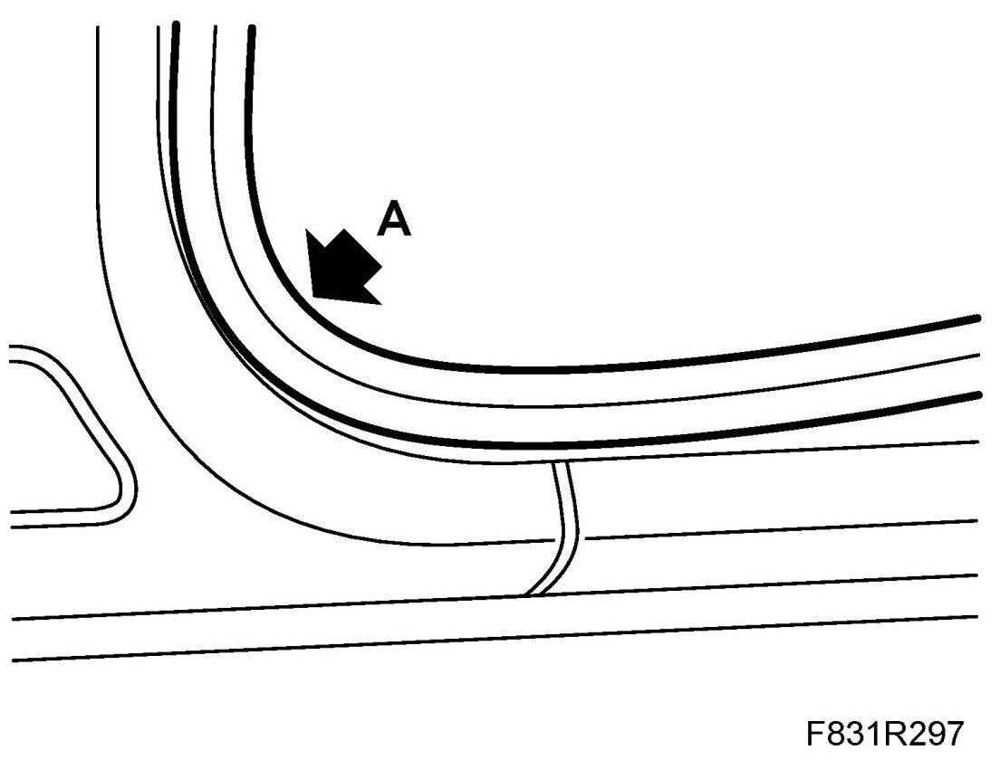
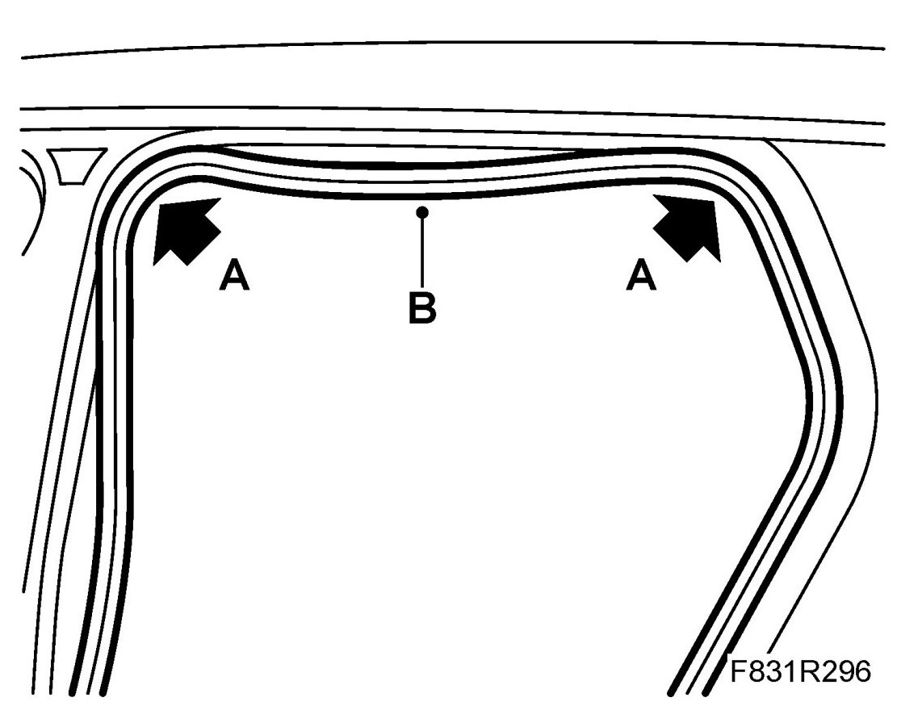
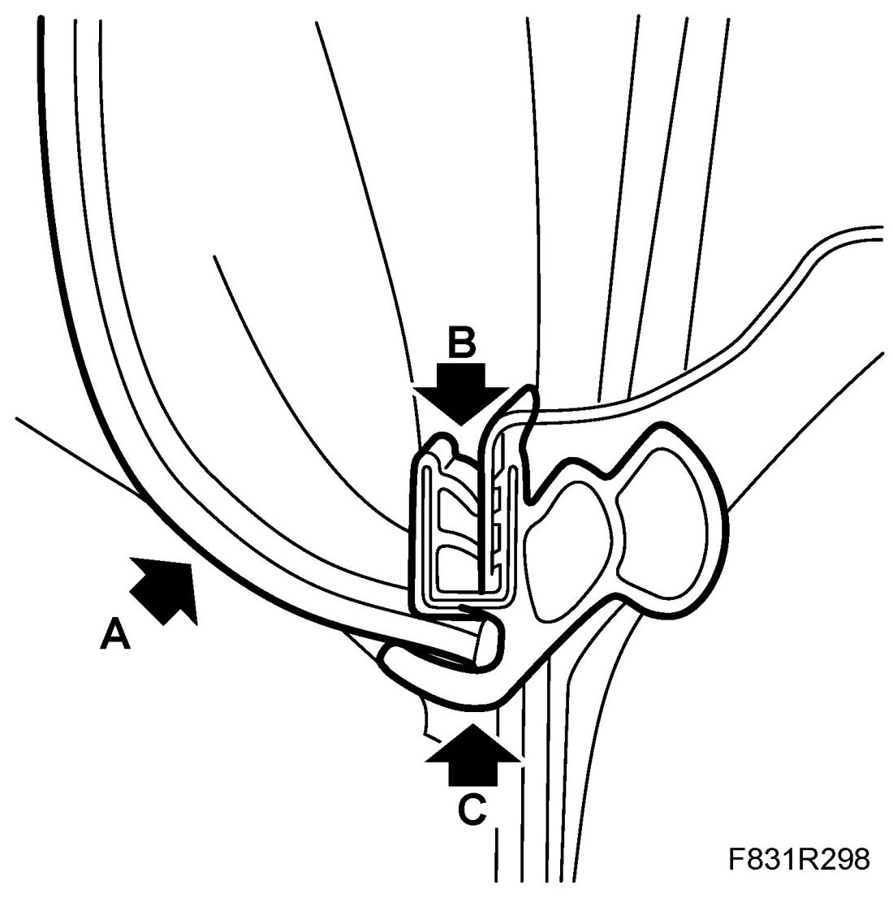

Water Leaks In Through the Rear Door.
Water Leaks In Through The Rear Door.
Fault symptoms
Water leaks in through the rear door. This could result in a damp rear seat as well as drops of water hanging from the door opening seal.
This could arise following heavy rain or high-pressure car washing.
Applies to cars: 9-3 5D
Cause: The door opening seal is not fitted correctly. The seal is tensioned too tightly in the corners which means that the seal does not seal tightly and so admits water.
Procedure
1. First fit the removed seal in the three corners (A), as illustrated.


Make sure that the seal between the two top corners has an extra length of approx. 30-50 mm. The seal should hang down slightly (B).
2. Then press in the seal all the way along the door opening.
3. Make sure that the headlining is correctly fitted in the seal as illustrated.

A headlining
B flange
C seal